My son told me he was scared because I was always working.
I had just fought a court case to become his father. I kept that promise in the courtroom, then broke it at home every day I left for the plant. This is how a single dad of three bought his time back, and where I'd tell you to start.
Single dad of threeFormer Nissan plant workerNow works on his own time
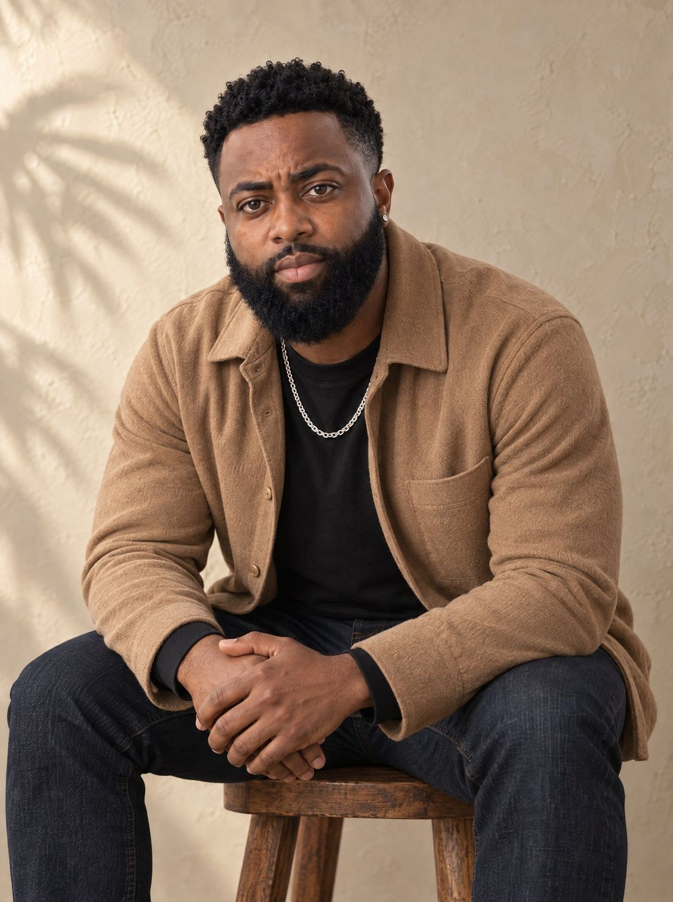
Coach WillDad first. School drop-off every morning.
This is for you if…
I was every one of these people. That's why I know where to start.
01
You want an online income but don't know where to start.
02
You want more time with your kids while they're still young.
03
You're ready to leave the 9-5, or at least stop needing it.
04
You don't have a product to sell yet.
05
You don't have followers yet.
06
You've tried other programs and felt like a piece was always missing.
My story in one sentence
I kept my promise to my late wife by winning the fight to adopt her son, but it was a 9-year-old telling me he was scared that made me realize I was still breaking that promise at home.
But why does that matter?
The promise
I was 21, sitting on the couch with my wife, playing with our newborn daughter. Out of nowhere she looked at me and asked, "If anything ever happened to me, would you fight to keep my son?"
I didn't hesitate. Yes. He was three, and he already felt like my own.
Then something did happen. I lost her. The same heartbreak that took my wife put me in a courtroom, fighting his biological father for the boy I'd promised to protect.
I doubted I would win every single day. Then one day his father walked up, signed his rights away, and walked out. My lawyer turned to me: "How would you feel about adopting him instead of temporary custody?"
There was one more obstacle. The adoption couldn't go through until they served his father a bench warrant for years of back child support. I told the judge I didn't want the money. I wanted my son.
"He looked at me and said he wished he had more men like me standing in front of him every day."
I walked out of that courtroom and went straight to his school to pick him up for a day out. He's called me Dad ever since.
But why does that matter?
The breaking point
Winning didn't fix what was happening at home. I was a single dad with three kids who had just lost their mom: my oldest was 9, my daughter was 4, and my youngest was 2.
2 PMShift started, before school let out
12 AMShift ended, long after bedtime
1 hourEach way to the Nissan plant
One night I walked in and my oldest was still up. He told me he gets scared because I'm always working.
I had fought a whole court case to be his father, and he was growing up without me anyway.
I tried to get out. I tried other programs and companies and spent thousands of dollars and hundreds of hours. Every time, it felt like a piece was missing.
Then I found DWA. The first thing I noticed was how many different ways there were to make income. I was already on social media every day, so I started applying what I learned. On day 7, I had my first viral post and gained over 2,000 followers.
But why does that matter?
The truth
Most of us were raised to believe that time with our kids is something you earn after the bills are paid.
Underneath that is the fear nobody says out loud: that by the time you've earned it, they'll already be grown, and they'll have done it without you.
I didn't want my kids to remember me as the man who was always at work.
I take my daughter and my youngest to school every morning
I pull up to my oldest's college campus whenever I want
I plan trips around my family, not a time-off request
My work fits around my kids, not the other way around
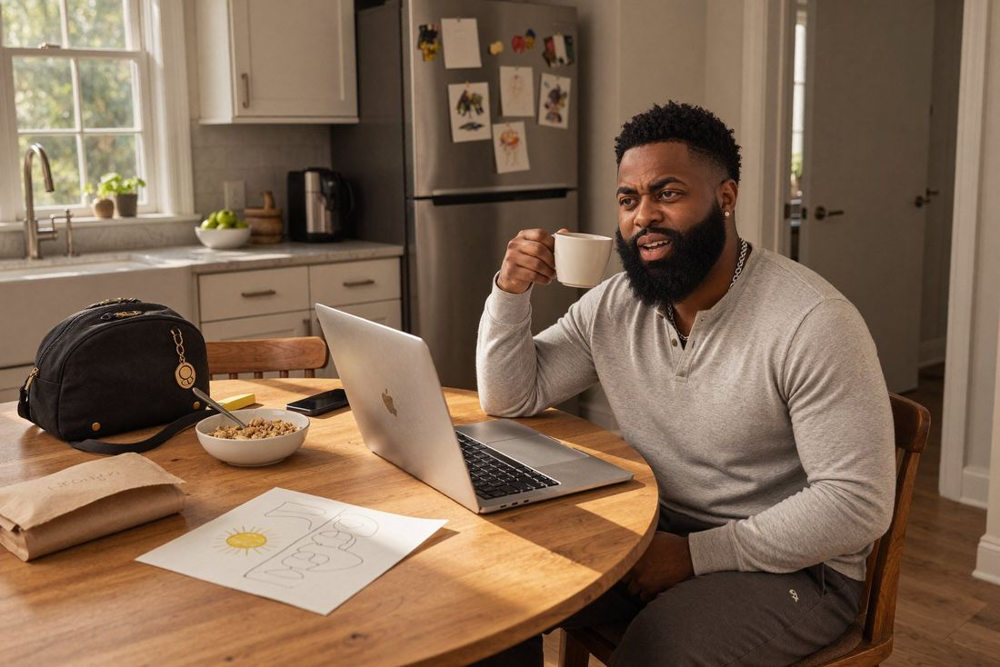
Weekday morning. Coffee, school bags and a drawing that says Daddy.2 PM on a weekday. The hour my shift used to start.
Places I've stood without asking anyone's permission
Time freedom looks like this. The money matters, but what I really bought back was time.
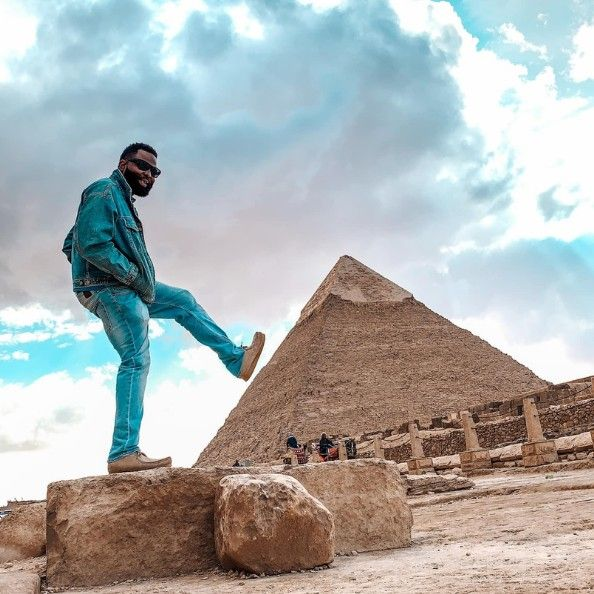
Giza, Egypt
Havana, Cuba
Brussels, Belgium
Great Wall, China
Behind the camera
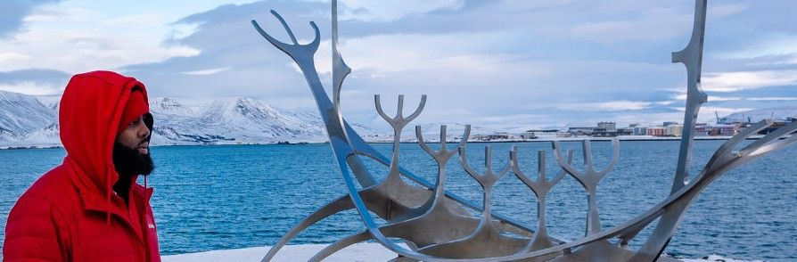
Reykjavík, Iceland
Digital Wealth Academy
Why DWA was the missing piece
Everything else I tried taught one way to make money. The first thing I noticed inside DWA was how many ways there were.
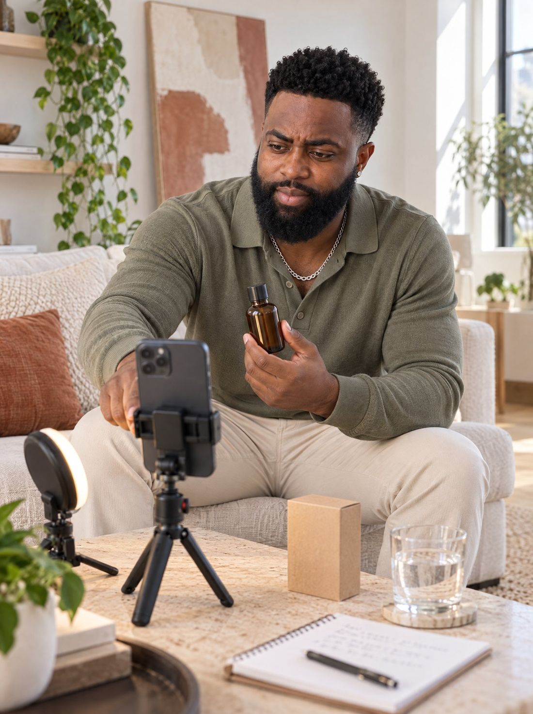
5+
More than five ways to make income
From the DWA Affiliate Program (85% commissions) to setting up your own store, pick the path that fits your life.
100%
No product? Start with MRR.
Master Resell Rights products are finished products you can resell and keep 100% of the profit.
0
No followers? Grow organically.
Learn to grow on social media without paid ads. My first viral post came on day 7.
+
Bonus: my private community
Join DWA through my link and get access to my Skool community, where I mentor you through getting started.
Sneak peek
Take a look inside
Start Here, Mindset, the Affiliate Program, Set Up Your Store, the Creator's Playbook, the Pre-Launch, plus a community you can ask questions in any day.
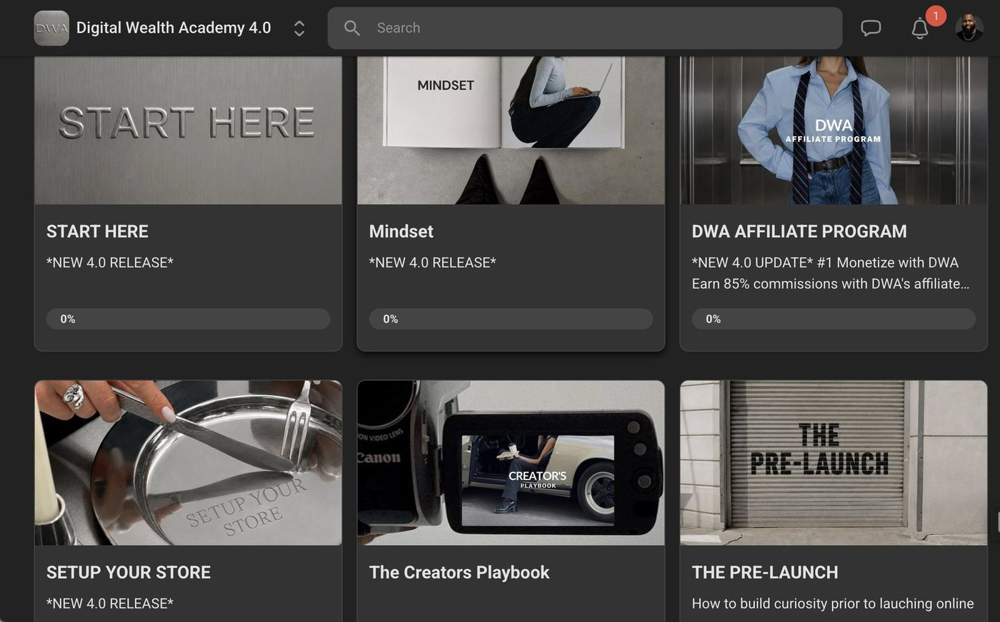
Inside Digital Wealth Academy 4.0: the course modules.
What to expect, honestly
01
Join through my link
Get into Digital Wealth Academy plus my bonus Skool community.
02
Choose your path
Go through the income methods and pick the one that fits your life right now.
03
Show up and apply
This isn't a get-rich-quick button. It works when you do. I applied what I learned every day, and it started paying off.
Proof, not promises
My first win
Day 7
First viral post. Over 2,000 new followers.
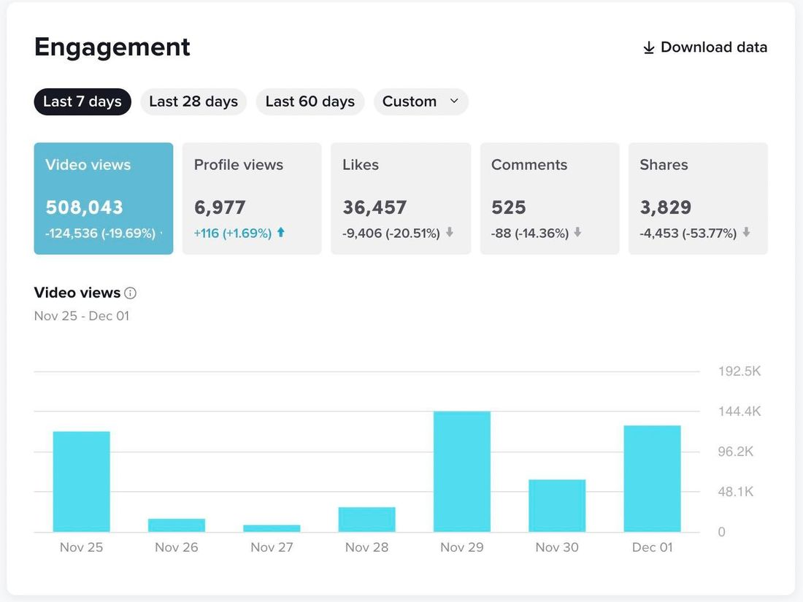
My TikTok, one week: 508,043 video views and 36,457 likes.
What other DWA members are sharing
Posts from the Digital Wealth Academy community's testimonials channel. These are their results, not mine, and they aren't typical.
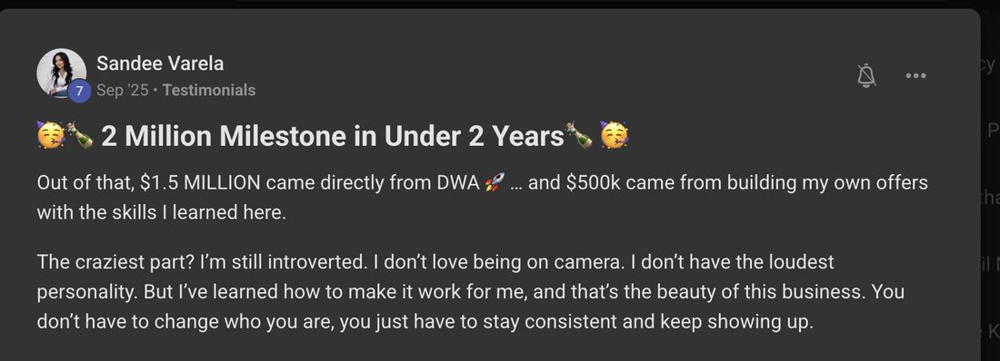
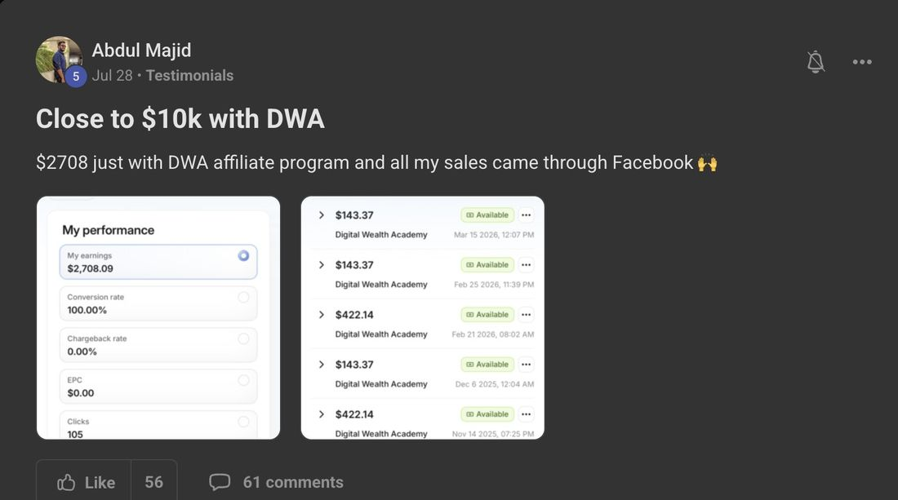
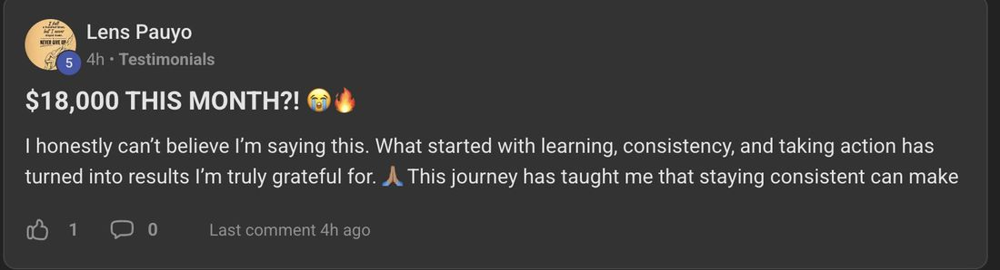
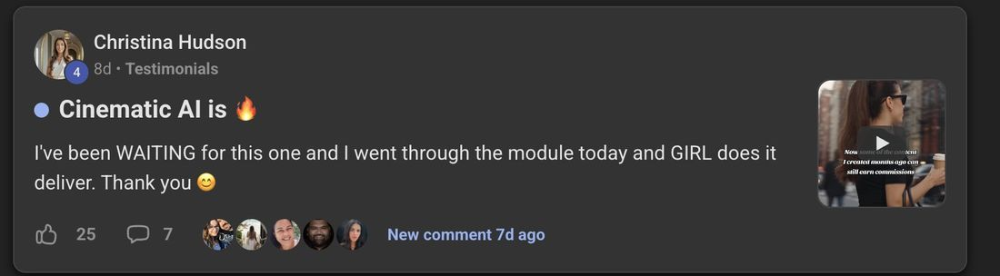
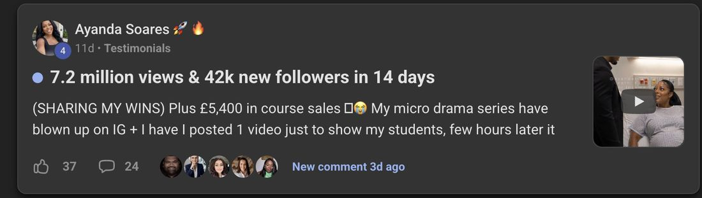
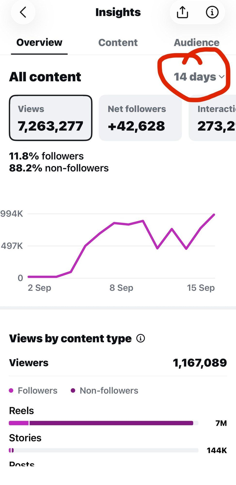
The 14-day insights behind Ayanda's post.
Q&A
Questions I get every day
Do I need followers to start?
No. DWA teaches organic growth, and my first viral post came on day 7.
Do I need my own product?
No. You can start with MRR products you're allowed to resell and keep 100% of the profit.
I've tried other programs. Why would this be different?
I get it. I spent thousands of dollars on other companies before DWA. For me the difference was having more than one way to make income, so I could pick what fit my life.
Can I do this with kids at home?
That's exactly why I started. The whole point was more time with mine.
Is this get-rich-quick?
No. It's a skill you build. You get out what you put in.
What does it cost?
You’ll see the current price and everything included on the checkout page before you pay.
What do I get for joining through Coach Will?
Everything in DWA, plus access to my private Skool community.
They're only this age once.
You don't get those years back, and you don't have to wait until you've "earned" them. If you've ever felt that fear, this is where you start.